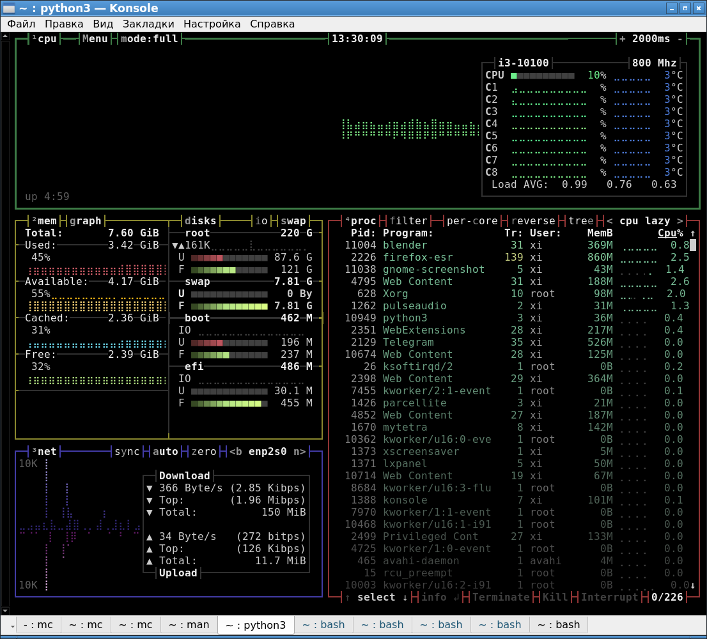
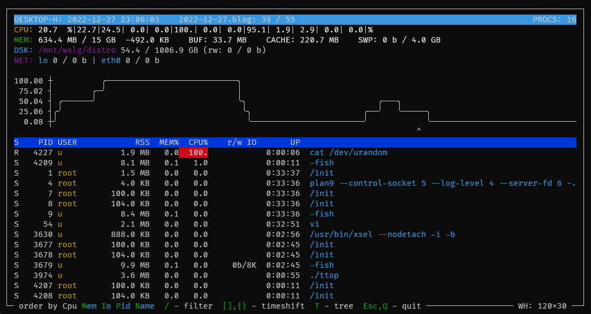
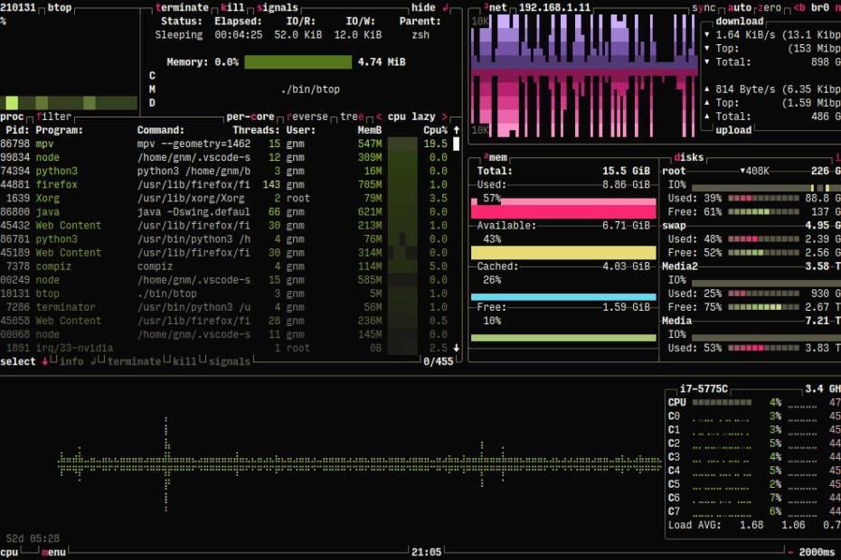

Исторически в Linux для локального мониторинга работы системы используется консольная утилита top. Спустя некоторое время появилась и более функциональная утилита - htop. Однако обе эти утилиты показывают "мгновенные" снимки текущего состояния нагрузки на систему, и не показывают исторические данные и графики, хотя бы в течении работы приложения мониторинга.
Поэтому в Linux появились и другие программы, которые выводят информацию о нагрузке на систему, но при этом наглядно показывают графики изменений основных значений.
Утилита bpytop
Для своей работы данная утилита использует python3. Утилита довольно старая и имеется даже в стандартных стабильных репозитариях Debian Linux. Видимо, при её написании автор вдохновлялся утилитой btop (см. далее).

Клавишами вверх-вниз происходит навигация по запущенным процессам. Если подняться на самый верх списка процессов, то курсор попадает в "заголовок" таблицы процессов, и в нем клавишами влево-вправо можно менять столбец, по которому происходит сортировка.
Кнопка Enter показывает подробную информацию о процессе. Область с информацией о процессе находится сверху от списка процессов, но пока Enter на любом из процессов не нажат, она не видна.
Каждая область информации обрамлена рамкой соответствующего цвета. Следует обращать внимание на заголовок каждой области. В нем серым цветом вреди белых букв выделены клавиши, которые выполняют в данной области определенные действия.
В программе имеется меню, которое вызывается клавишей M (именно в высоком регистре). Переключение вкладок меню происходит клавишей tab.
Утилита TTop
TTop — это утилита мониторинга системы с поддержкой исторических данных.

Программа ttop поддерживает следующие функции:
Так как программа написана на языке Nim, то для простоты установки на официальном сайте выкладываются статические сборки бинарников этой программы. Получить готовый бинарник можно следующими командами:
wget https://github.com/inv2004/ttop/releases/latest/download/ttop
chmod +x ttop
Этот бинарник можно положить в /usr/bin.
Чтобы ttop собирал информацию, он должен быть прописан в systemd.timers. Программа ttop умеет сама себя прописывать в systemd как сервис, причем сервис создается для текущего пользователя. Для этого необходимо выполнить команду:
ttop --on # enable data collector in user's systemd.timers or crontab
После этой команды в каталоге пользователя должен появиться следующая директория кеша:
~/.cache/ttop
В этой директории будут скпливаться файлы статистики использования системы.
Сама утилита вызывается командой:
ttop
Программа отобразит список процессов. Для перемещения по историческим данным используются клавиши [ и ]. Какой момент времени отображается, написано в шапке (в первой строке) окна с запущенной утилитой.
Особенность первого запуска: в нем не будет видно графика нагрузки на систему. Чтобы график появился, надо выждать минимум 10 минут чтобы накопилась статистика в файлах кеша.
Утилита btop
btop — монитор ресурсов системы который выводит статистку использования процессора, памяти, сети и дисков.

Возможности btop:
Для запуска btop необходимо выполнить в терминале команду btop. По умолчанию btop отображает блок статистики процессора, вывод активных процессов, доступное место на жестких дисках, статистику использования памяти и сети.
Основное меню вызывается клавишей m. В опциях меню доступны вкладки general, cpu, mem, net, proc. Переключение между вкладками происходит клавишей tab.
Примечание: похоже, что с некоторых пор проект btop был переименован в btop++. Но бинарник все так же называется btop.